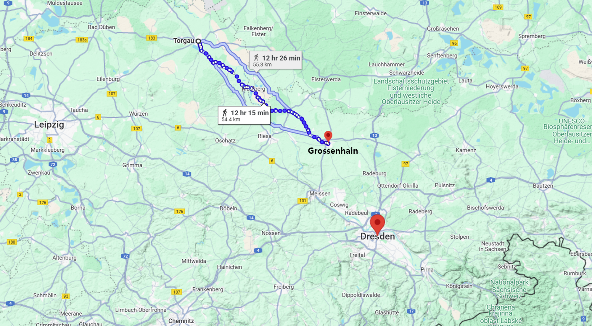
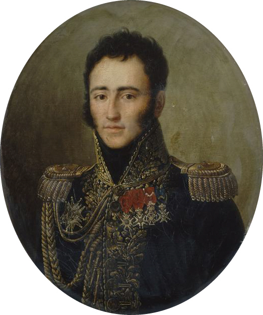
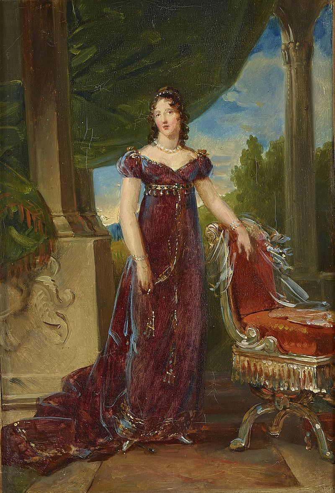
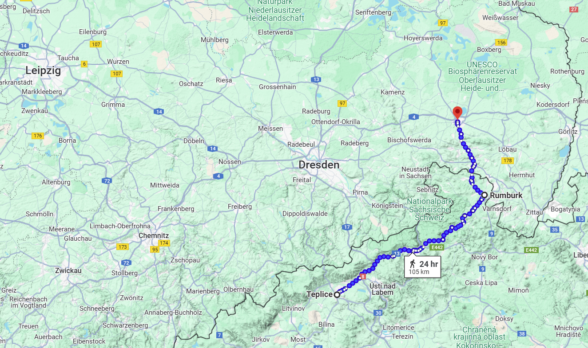
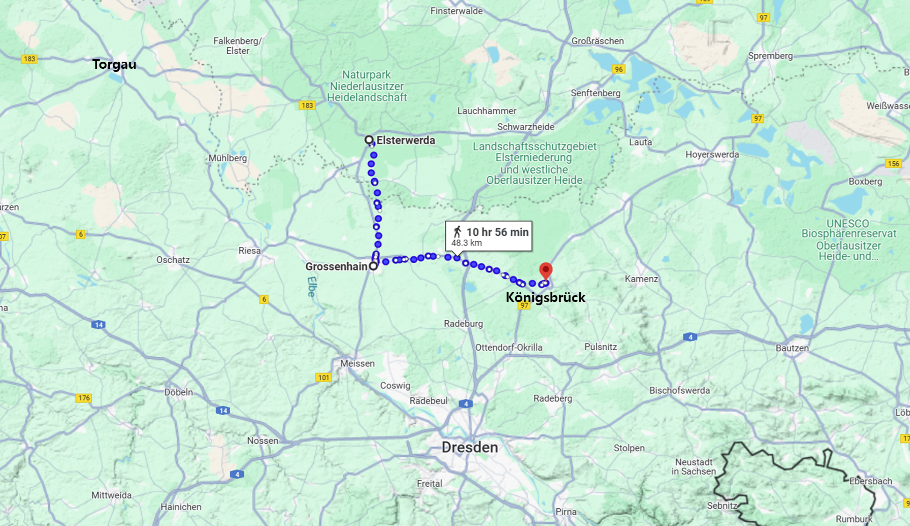

라이프치히로 가는 길 (4) - 포로가 된 아들
게시: 2024-11-18T06:30:38+09:00
9월 중순, 블뤼허의 슐레지엔 방면군은 다소 갑갑한 상황에 놓여 있었습니다. 일단 당장 대치하고 있는 막도날의 보버 방면군을 계속 몰아치고는 있었으나, 베르나도트를 치려는 나폴레옹으로부터 '보버 방면군이 전선을 지키지 못하면 모든 계획이 흐트러진다'라는 닥달을 받은 막도날도 결사적으로 블뤼허에게 저항하고 있어서 서쪽 드레스덴으로의 진군이 쉽지는 않았습니다. 무엇보다, 막도날의 등 뒤에는 엘베강과 드레스덴이 있었고 막도날은 여차하면 드레스덴의 견고한 성벽 뒤로 숨어버릴 수 있었습니다. 게다가 나폴레옹의 주력군이 도사리고 있는 드레스덴에 블뤼허 혼자서 접근하는 것도 위험한 일이었습니다. 그런 상황에서 (나중에야 그것이 밀가루 수송선단 호위를 위한 병력 전개라는 것을 알았지만) 엘베강 우안인 그로스엔하인에 뮈라가 대규모 병력을 이끌고 주둔하고 있었기 때문에 엘베강 하류쪽에서 엘베강 좌안으로 도강하는 것도 쉽지 않았습니다.

(그로스엔하인은 토르가우와 드레스덴의 중간 정도에 위치한 곳으로, 엘베강 동쪽에 위치하여 베르나도트와 블뤼허 사이에 자리잡고 있었습니다.)
그러다보니 어느 쪽으로도 움직일 여지가 많이 않아서 블뤼허의 전선은 정체된 상황이었는데, 이건 블뤼허의 심기에 몹시 불편한 일이었습니다. 특히 9월 16일에는 블뤼허에게 개인적으로 몹시 심란한 일이 발생했습니다. 그의 맏아들인 프란츠(Franz Ferdinand Joachim von Blücher) 소령이 페터스발트(Peterswald) 인근 놀렌도르프(Nollendorf)에서 그랑다르메와 싸우다 부상을 입고 포로가 되었다는 소식이 날아든 것입니다. 전에 언급한 것처럼, '아마 나폴레옹이 라이프치히로 후퇴하려는 모양'이라고 판단하고 페터스발트를 넘어 북진했던 슈바르첸베르크의 선두는 기다렸다는 듯이 반격해온 그랑다르메의 공격에 맥없이 후퇴해버렸는데, 원래 보헤미아 방면군 소속이었던 블뤼허의 아들 프란츠도 바로 그 전투 현장에 있었던 것입니다. 더욱 신경이 거슬리는 것은 그 소식을 전해준 것이 보헤미아 방면군의 슈바르첸베르크가 아니라 바로 나폴레옹 본인이었다는 점이었습니다. 나폴레옹은 블뤼허에게 편지를 보내어 '당신 아들은 부상을 입었지만 생명에는 지장이 없다, 바로 최근에 연합군에게 포로가 된 에드몽-드-페리고르(Edmond de Perigord) 대령과 당신 아들을 포로 교환하고 싶다'라는 의사를 밝혔던 것입니다. 실은 이렇게 나폴레옹의 소식이 더 빠를 수 밖에 없는 것이, 보헤미아 방면군에서는 프란츠 블뤼허가 전사한 건지 행방불명인지 확인하는 것도 어려웠지만, 무엇보다 놀렌도르프와 바우첸 사이의 거리가 꽤 멀었기 때문이었습니다. 그에 비해 나폴레옹은 내선 이동의 이점을 가지고 있었으므로 놀렌도르프에서 벌어진 일을 훨씬 빨리 바우첸의 블뤼허에게 알려줄 수 있었습니다.

(블뤼허의 이 초상화는 종전 이후인 1814년 영국을 방문한 블뤼허를 영국 화가 로렌스(Sir Thomas Lawrence)가 그린 것입니다. 당시 연합국 군주들과 함께 런던을 방문한 블뤼허는 특히 런던 시민들 사이에서 인기가 좋았는데, 이 그림은 영국 섭정공이던 조지 4세(George IV)가 금화 400기니, 그러니까 현재 가치로 대략 6700만원에 의뢰했던 것입니다. 이 그림은 지금 윈저성(Windsor Castle)에 소장되어 있습니다. 이렇게 블뤼허는 온갖 명예를 누렸으나, 아들 프란츠는 블뤼허에게 큰 슬픔을 주었습니다. 프란츠는 에드몽과의 포로 교환으로 돌아오자마자 불과 몇 달 간격으로 중령에 이어 대령으로 승진했으나, 실은 놀렌도르프에서 입은 부상은 꽤 심각한 것이었고 무엇보다 정신적 상처가 꽤 커서 곧장 병가에 들어갔습니다. 그러고도 1814년 다시 군에 복귀하여 쿨로미에(Coulommiers) 전투 등에서 싸웠고 훈장도 받았으나, 결국 부상의 여파로 인한 정신병이 악화되어 1815년 자살을 시도하기도 했습니다. 프로이센군은 프란츠를 서둘러 소장으로 승진시킨 뒤 전역시켰고, 이후 그는 정신 병원에 수용되었으나 결국 51세에 사망하고 맙니다.)

(그나저나, 나폴레옹이 블뤼허의 아들 프란츠와 교환하려고 친히 편지까지 보낼 정도의 인물이었던 에드몽-드-페리고르라는 인물은 대체 인물이었을까요? 이 그림이 바로 에드몽의 초상화인데, 초상화가 있다는 것은 거물급 인물이라는 이야기지요. 페리고르라는 이름이 귀에 익으실 수도 있는데, 에드몽은 바로 탈레랑(Charles Maurice de Talleyrand-Périgord)의 조카였습니다. 나폴레옹도 탈레랑의 눈치는 봐야 했으므로, 에드몽이 9월 19일 전투에서 포로가 되었다는 보고를 받자 바로 3일 전 포로로 잡았던 프란츠와 포로 교환 협상을 시도했던 것입니다. 실은 에드몽은 블뤼허 휘하의 부대에게 잡힌 것은 아니었고 베르나도트 휘하의 타우엔치언 군단 소속 기병대에게 잡힌 것이긴 했습니다만, 결국 무사히 잘 풀려났습니다. 나폴레옹 몰락 이후에도 부르봉 왕가에게 재빨리 줄은 선 탈레랑 덕분에 에드몽도 한자리 꿰어차고 나중에 중장 계급까지 올라갔습니다. 이렇게 에드몽은 삼촌 덕분에 인생이 쉬웠던 것 같지만 꼭 그렇지만은 않았습니다.)

(에드몽의 인생에 탈레랑은 절대적인 영향을 미쳤습니다. 가령 군사 교육도 전혀 받지 않은 에드몽에게 장교 임관을 시켜주고 빠른 승진을 보장해준 것도 탈레랑이었고, 1809년 그에게 발트해 독일계 공주님인 도로떼(Dorothée de Courlande)와의 결혼을 성사시켜준 것도 탈레랑이었습니다. 그러나 도로떼의 가족들은 반-프랑스파라서 이 결혼을 좋아하지 않았고, 남편 에드몽도 도박과 다른 여성들과의 연애에 정신이 팔린 상태라서 이들의 결혼 생활이 꼭 행복한 것은 아니었습니다. 그렇게 불행한 결혼 생활을 하던 도로떼에게 접근한 것이... 무려 39세 연상이자 에드몽의 삼촌인 탈레랑이었습니다. 결국 에드몽과 별거를 시작한 도로떼는 탈레랑의 정부가 되었고, 에드몽과의 사이에서 낳은 3명의 자녀 중 막내인 딸은 사실상 탈레랑의 딸이었다고 전해집니다. 윗 그림이 도로떼 공주의 초상화인데, 이건 복제본이고 원본은 WW2 동안 소실되었다고 합니다.)
이건 단순히 '왜 내 아들 소식을 아군이 아닌 적을 통해서 들어야 하는가'라는 자존심 문제만은 아니었습니다. 연합군이 3개 방면으로 나폴레옹을 포위하여 어느 한개 방면군이 나폴레옹을 정면으로 상대할 때 다른 2개 방면군이 나폴레옹의 측면이나 후면을 물어뜯는다는 것이 트라헨베르크(Trachenberg) 의정서의 핵심이었습니다. 그런데 그게 제대로 돌아가려면 3개 방면군이 서로의 상황에 대해 매우 신속하게 동기화되고 있어야 했습니다. 통신 수단이라고는 말을 탄 전령 외에는 없던 시절, 남-북-동쪽으로 수백 km씩 서로 떨어진 3개 방면군은 서로 소식을 주고 받으려면 아무리 빨라도 2~3일씩 시간이 걸릴 수 밖에 없었습니다. 실은 훨씬 더 걸렸습니다. 장군이 내용을 구술하고, 그걸 서기가 받아적고, 사본을 만들기 위해 몇 명이서 베껴 쓰고, 암호화하고, 밀납으로 봉인한 뒤에 파발마 여럿을 출발시키는 데에는 시간이 의외로 꽤 걸렸기 때문이었습니다. 샤른호스트에게 훈련을 받아 꽤 수준이 높았던 블뤼허 휘하의 참모진에서조차, 저 멀리 베르나도트나 슈바르첸베르크가 아니라 바로 몇십 km 떨어진 블뤼허 휘하의 군단장에게 명령서를 보내는 데도 시간이 너무 오래 걸려 바로 인근에서 절호의 찬스가 생긴 적에 대한 기습에 실패한 적도 있었습니다. 이런 조건 속에서 수백 km 떨어진 3개 방면군이 서로 톱니바퀴처럼 맞물려 나폴레옹을 협공하는 것은 사실상 불가능한 일이었습니다.

(당시 슐레지엔 방면군 사령부가 위치한 바우첸 일대에서 보헤미아 방면군 사령부가 위치한 테플리츠(Teplitz, 체코어로는 Teplice)까지 가려면 럼부르크(Rumburg) 또는 지타우(Zittau)를 거쳐야 했는데, 100km가 넘는 거리였습니다.)
그런 상황 속에서 보급 문제도 점점 나빠지고 있었는데, 어이없게도 그건 연합군인 러시아군 때문이었습니다. 블뤼허는 공식 보고서에서 충분한 식량을 보급받고 있으며 사기는 높고 군율은 엄정하다고 적었지만, 실제로는 문제가 많았습니다. 코삭들이 슐레지엔에서 식량을 실어오는 마차들을 훔치거나 대놓고 약탈하는 일이 잦았던 것입니다. 코삭들은 특히 당장의 식량도 식량이지만 그런 마차들을 끄는 말이나 나귀 등 가축을 몹시 탐을 냈는데, 러시아 장교들은 그런 코삭들을 제대로 통제하지 못했습니다. 게다가 베니히센의 폴란드 방면군이 슐레지엔을 지나 보헤미아로 가면서 그 일대의 식량을 소비하게 되자 슐레지엔 방면군은 더욱 보급 부족에 시달리게 되었습니다. 그러자 일부 프로이센군도 코삭처럼 약탈 행위에 동참하는 일까지 발생하고 있었습니다. 먹는 것도 문제지만 군화나 군복 등의 문제도 매우 좋지 않았습니다. 당시 제조 기술로는 야전에서 군화와 군복은 금세 헤어지고 뜯어지기 일쑤였습니다. 그런데 재보급이 없으니, 일부 부대의 경우 전체 병력의 절반 정도는 이미 맨발 신세였습니다. 프로이센군 장교들조차 7월 이후로는 아무런 급여를 받지 못해 복장의 품위나 사기는 말할 것도 없고 당장 먹고 마시는 문제 해결도 어려운 판국이었습니다. 그런 우울한 소식들 속에서 블뤼허는 반가운 소식도 받았습니다. 원래 그는 베르나도트 휘하에 있는 프로이센 군단장들인 뷜로 및 타우엔치언와 개별적으로 편지를 주고 받으며 베르나도트 등 뒤에서 자신들만의 교감을 형성하고 있었습니다. 마침내 9월 16일, 타우엔치언은 블뤼허에게 편지를 보내 '아무 것도 하지 않는 베르나도트의 지휘에서 벗어나 이젠 블뤼허와 협력하여 싸우겠다'라고 통보하기에 이르렀습니다. 이건 굉장히 위험천만한 제안이면서도 꽤 마음이 뭉클해지는 입장 표명이었습니다. 아무리 조국을 위하는 일이라고 해도 이건 군에서 명백한 명령 체계 무시 행위라서 군법회부감이었고, 또 타우엔치언은 한때 프로이센군 전체 지휘권을 두고 블뤼허와 경쟁했을 정도의 거물이었는데 스스로 굽히고 블뤼허 밑으로 들어가겠다는 의사표명이었으니까요. 다행히 베르나도트도 정말 가만히만 있기는 창피했던지, 타우엔치언과 거의 동시에 블뤼허에게 편지를 보내 엘베강을 건너려고 하는데 토르가우 일대에서 블뤼허의 도움을 받았으면 한다는 요청을 보내왔으므로 협동 작전은 좀 더 쉬워졌습니다. 좋은 소식은 떼를 지어서 오는지, 그로스엔하인에 집결한 뮈라의 약 5만 병력은 토르가우에서 드레스덴으로 가는 밀가루 수송선단 호위를 위한 것이었고, 이제 곧 다시 드레스덴으로 돌아갈 것 같다는 보고도 날아들었습니다. 블뤼허는 그렇게 일시적으로 엘베강 우안에 나와 있는 뮈라의 군단들을 들이치기로 합니다. 그는 토르가우 동쪽의 엘스터(Elster) 마을까지 진출한 타우엔치언에게 편지를 보내 '일단 엘스터베르다(Elsterwerda)까지 도착한 뒤 나에게 소식을 전하면 우리는 쾨니히스브뤽(Königsbrück)에서 출발할 테니 동시에 그로스엔하인의 뮈라를 치자'라는 작전 계획을 전달했습니다.

(상대방의 돌파구는 아군의 포위망이 될 수도 있었습니다. 저렇게 그로스엔하인에 진출한 뮈라의 군단들은 블뤼허와 베르나도트의 합류를 막는 역할을 할 수 있었지만 동시에 양군의 협공을 받을 수도 있는 위치에 있었습니다.)
프랑스군에 두뇌는 모자라지만 용기와 배포만은 둘째 가라면 서러운 대표적인 용장이 뮈라라면 프로이센군에서 딱 그 위치에 있는 사람이 블뤼허였습니다. 이 희대의 두 용자들이 드디어 격돌하게 되었을까요? Source : The Life of Napoleon Bonaparte, by William Milligan Sloane Napoleon and the Struggle for Germany, by Leggiere, Michael V With Napoleon's Guns by Colonel Jean-Nicolas-Auguste Noël https://www.wikitree.com/wiki/Von_Bl%C3%BCcher-15 https://en.wikipedia.org/wiki/Gebhard_Leberecht_von_Bl%C3%BCcher https://fr.wikipedia.org/wiki/Edmond_de_Talleyrand-P%C3%A9rigord https://www.britannica.com/event/Napoleonic-Wars/Dispositions-for-the-autumn-campaign https://en.wikipedia.org/wiki/Princess_Dorothea_of_Courland